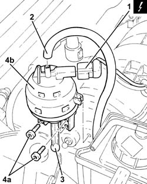
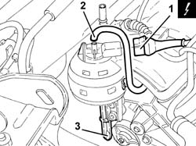
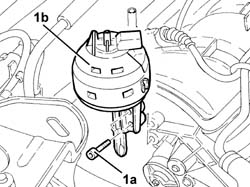

1072D22 AIR FLOW SWITCH CONTROL ACTUATOR R R
- Path
- Procedures > 10 ENGINE UNIT > 1072 INLET AND EXHAUST MANIFOLDS > 1072D MODULAR INLET MANIFOLD (V.I.S.) > 1072D22 AIR FLOW SWITCH CONTROL ACTUATOR R R
- Kind
- repair procedure (removal / refitting; the operation number is the code)
- Applies to
- engines: 1.8 T.SPARK, 2.0 JTS; all production periods
- Interactive page
- https://sloeber94.github.io/elrnDB-aGt/en/#/125001086
Applies to: engines: 2.0 JTS; all production periods
 Removing
Removing
 Refitting
RefittingMake sure that the ignition key is in the OFF position, then disconnect the negative battery terminal (-)
Description | Connector | |
|---|---|---|
- | Battery | See A1B BATTERY ( BATTERY NEGATIVE ) |
1. Disconnect the electrical connection from the switching control actuator enablement solenoid valve.
Description | Connector | |
|---|---|---|
1 | Variable geometry solenoid valve | See L15 VARIABLE GEOMETRY CONTROL SOLENOID ( CONNECTORS ) |
2. Disconnect the vacuum intake pipe from the air flow switching device actuator and release it from the fastening on the latter.
3. Disconnect the air flow switching device actuator linkage.
4. Undo the bolts (4a) and remove the air flow switching device control actuator (4b).

Applies to: engines: 2.0 JTS; all production periods
Refitting
RemovingPlace the air flow switching device control actuator back in its housing and secure it using the bolts.
Connect the air flow switching device actuator linkage.
Connect the vacuum intake pipe from the air flow switching device actuator and secure it to the band on the latter.
Connect the electrical connection to the switching control actuator enablement solenoid valve.
Connect the negative battery terminal (-).
Applies to: engines: 1.8 T.SPARK; all production periods
Removing
Refitting- Make sure that the ignition key is in the OFF position, then disconnect the battery terminal (-).
Description | Connector | |
|---|---|---|
- | Battery | See A001 Battery |
- Op. 1016A40 IGNITION COIL COVER ON CYLINDER HEAD- R+R
- Op. 1008C10 POWER UNIT UPPER REACTION LINK R R
- Op. 4130B10 POWER STEERING FLUID RESEVOIR R R
1. Disconnect the electrical connection from the switching control actuator enablement solenoid valve.
Description | Connector | |
|---|---|---|
1 | Variable geometry solenoid valve | See L15 VARIABLE GEOMETRY CONTROL SOLENOID |
2. Disconnect the vacuum intake pipe from the air flow switching device actuator and release it from the fastening on the latter.
3. Disconnect the air flow switching device actuator linkage.

Applies to: engines: 1.8 T.SPARK; all production periods
- Undo the bolts (1a) and remove the air flow switching device control actuator (1b).

Applies to: engines: 1.8 T.SPARK; all production periods
Refitting
Removing- Place the air flow switching device control actuator in position.
- Connect the air flow switching device actuator linkage.
- Connect the vacuum intake pipe from the air flow switching device actuator and secure it to the latter.
- Connect the electrical connection to the switching control actuator enablement solenoid valve.
- Op. 4130B10 POWER STEERING FLUID RESEVOIR R R
- Op. 1008C10 POWER UNIT UPPER REACTION LINK R R
- Op. 1016A40 IGNITION COIL COVER ON CYLINDER HEAD- R+R
- Connect the negative battery terminal (-).